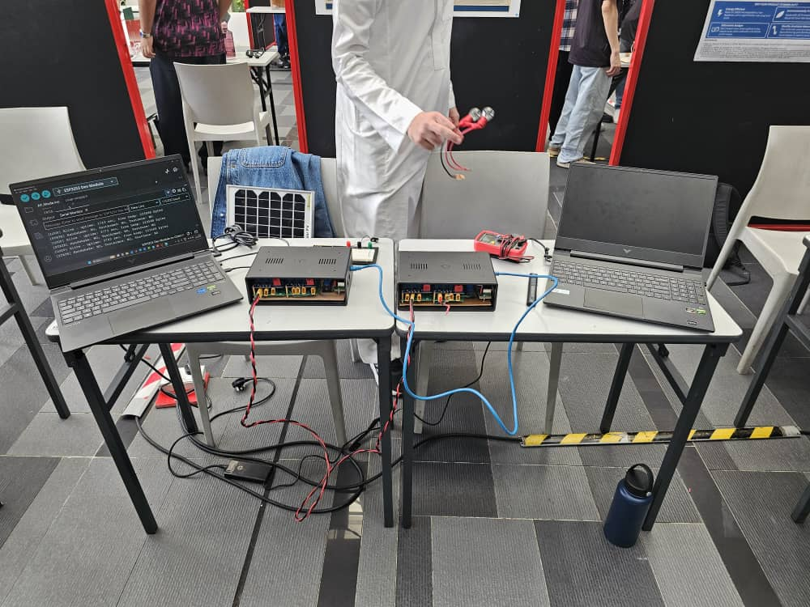
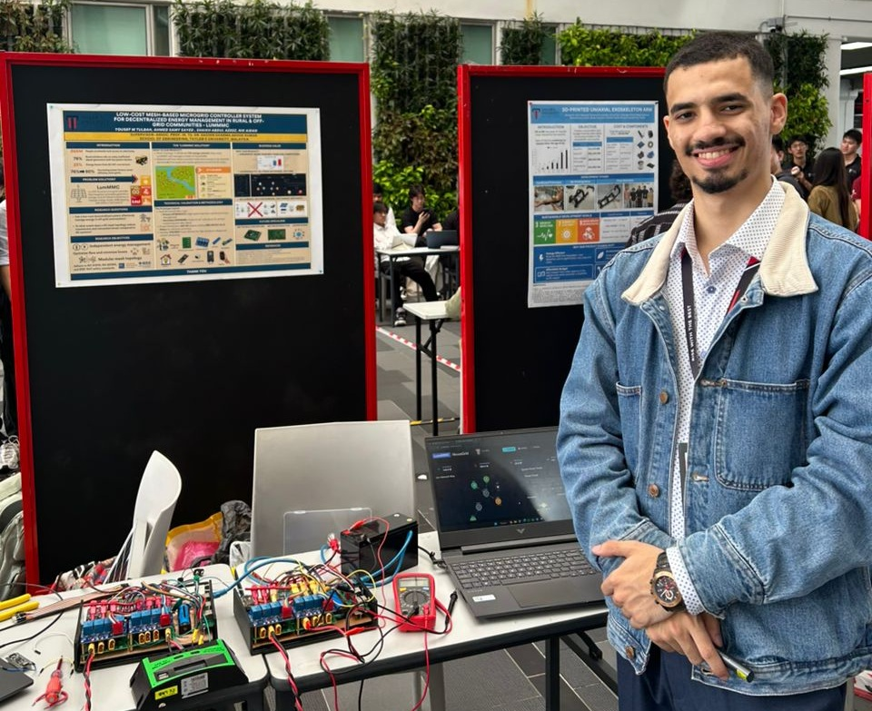

LumMMC
Low-cost Mesh-based microgrid controller system for decentralized energy management in Rural & off-grid Communities.

Project Overview
LumMMC is a low-cost, mesh-based microgrid controller system designed to manage decentralized energy distribution in rural and off-grid communities. By integrating real-time telemetry and peer-to-peer load balancing, it ensures reliable power routing across multi-source microgrids without relying on centralized infrastructure.
Key Features & Implementation
- Decentralized Mesh Topology: Dynamic peer-to-peer communication among node controllers.
- Adaptive Load Balancing: Autonomous energy routing based on real-time generation and demand.
- Fault-Tolerant Isolation: Self-healing network isolation preventing single-point grid failures.
NexusGrid IoT Interface
Real-time telemetry and system health diagnostics are transmitted via an integrated IoT framework, allowing monitoring of battery state-of-charge, power transfer rates, and fault detection across nodes.
Hardware & Media Gallery

Figure 1. LumMMC Complete System Unexposed

Figure 2. Personal picture with the whole system and poster